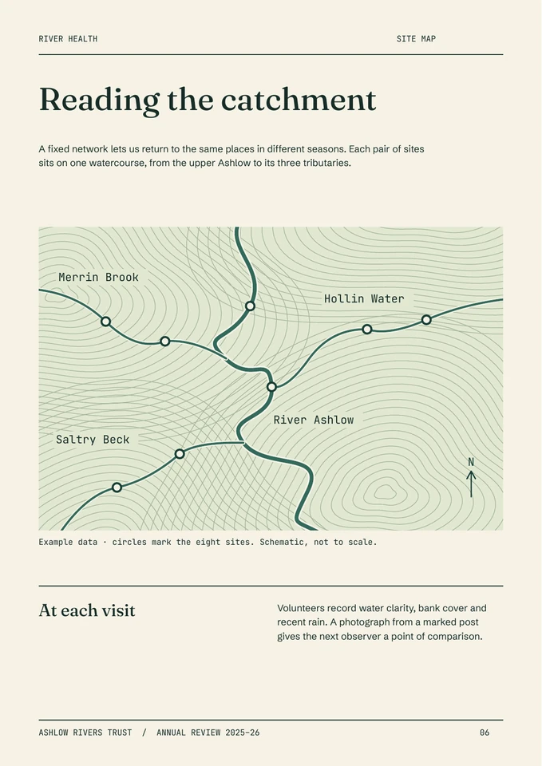
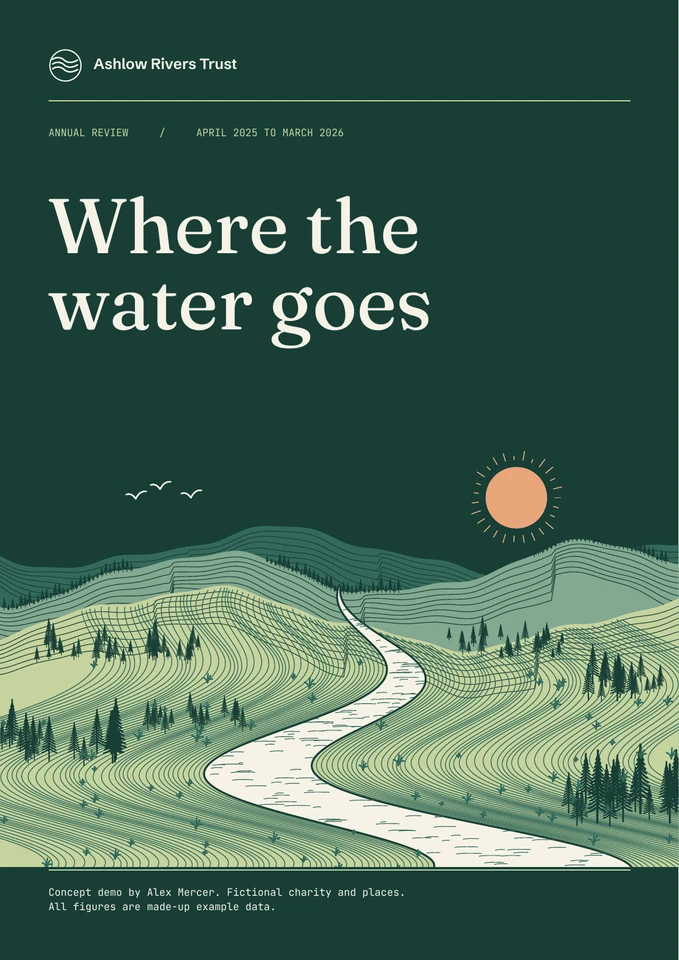

Page grid
- Format
- A4 portrait
- Columns
- 12
- Margins
- 15 mm
- Gutters
- 5 mm
- Baseline
- 4.5 mm
Editorial design / 2025–26
An illustrated year on the riverbank. A print publication for a fictional rivers charity, told in field notes, maps and figures.
A4, 16 pages, print-ready


The publication
Choose a spread to explore.
Open any page for a closer look.
Design notes
The grid, type and colour behind
the printed pages.
| Use | Typeface | Size |
|---|---|---|
| Cover | Fraunces | 68 pt |
| Page title | Fraunces | 35 pt |
| Subheading | Fraunces | 19 pt |
| Body | Schibsted Grotesk | 10.5 pt |
| Caption | JetBrains Mono | 9 pt |
WCAG contrast for each pairing, assessed at normal text size.
#F6F2E6Ink on paper#183E36Paper on pine#C6D39EMoss on pine#EAA57BClay on pine#32695BRiver teal on paper#172C27Ink on pale mossBars start at zero. Counts sit beside their labels, with units in the title or caption. The quarterly trend labels every observation. Each chart identifies its figures as example data.
The tagged PDF follows the semantic HTML reading order. Headings and bookmarks mark each section. Charts have text descriptions and direct labels, so meaning carries through in greyscale. The document language is British English and the smallest print text is 9 pt.
Page index
Downloads
Where the water goes · Annual review 2025–26
Tagged PDF · A4 portrait · 16 pages